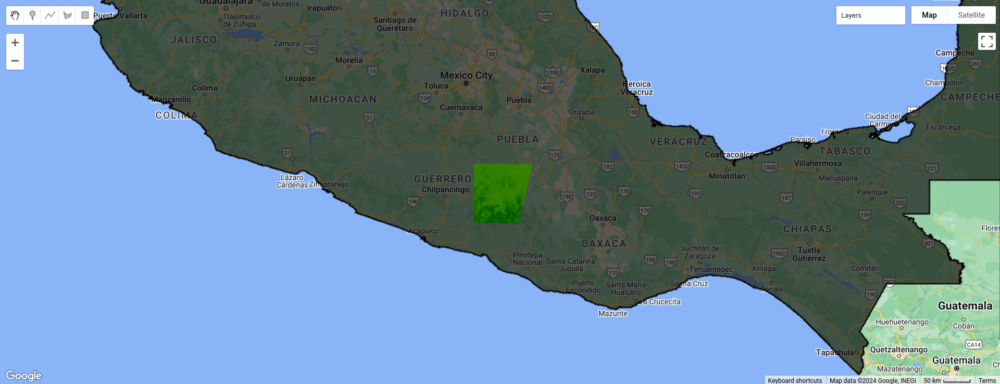

Cálculo de NDVI
Vamos a calcular un índice muy utilizado para hacer el cálculo de la vegentación en los suelos este es llamado Normalized Difference Vegetation Index (NDVI). Para tal motivo vamos a utilizar el conjunto de imágenes satelitales proporcionado por la agencia espacial europea. Un cierto conjunto de imágenes del programa copernicus y de las misiones Sentinel esta disponible en GEE.
Para obtener el NDVI se debe aplicar la siguiente función \[ NDVI = \frac{NIR - rojo}{NIR + rojo} \]
donde \(NIR\) es la banda que corresponde a la frecuencia cercana al infra rojo (Near-infrared) y rojo es la banda correspondiente a la frecuencia que corresponde al color rojo.
Vamos a concentrarnos en las imágenes que toquen a mexico por tal motivo tomamos el polígono de México como lo hicimos en la introducción a GEE
Vamos a calcular un índice muy utilizado para hacer un cálculo de vegentación este es llamado Normalized Difference Vegetation Index (NDVI). Para tal motivo vamos a utilizar el conjunto de imágenes satelitales proporcionado por la agencia espacial europea. Un cierto conjunto de imágenes del programa copernicus y de las misiones Sentinel esta disponible en GEE.
Vamos a concentrarnos en las imágenes que toquen a mexico por tal motivo tomamos el polígono de México como lo hicimos en la introducción a GEE
var worldcountries = ee.FeatureCollection('USDOS/LSIB_SIMPLE/2017');
var country = worldcountries.filter(ee.Filter.eq('country_na', 'Mexico'));En este caso vamos a tomar la colección COPERNICUS/S2_SR en general en el catalogo de GEE en la sección de cada colección podemos ver una descripción general, un pequeño ejemplo y las bandas de cada imagen.
En las siguientes lineas de código se selecciona la colección y se filtra a las imágenes que toquen al polygono que esta en la variable country y se filtra en un rango de fechas.
var S2_SR = ee.ImageCollection('COPERNICUS/S2_SR')
.filterBounds(country)
.filterDate('2018-01-01', '2019-01-01');Para obtener el NDVI vamos a usar las bandas B4 y B8
var nirBand = 'B8';
var redBand = 'B4';Vamos a tomar la primera imagen de la collección de imágenes, para hacer esto el objeto ImageCollection tiene una función llamada first. Se calcula el NDVI para dicha imagen como prueba se guarda eu una variable, podemos observar que en la imagen ndvi_fitenemos una nueva banda la cual no se encuentra en la primera imagen de la collección.
print(S2_SR.first());
var ndvi_fi = S2_SR.first().normalizedDifference([nirBand, redBand]).rename('NVDI');
print(ndvi_fi);Vamos a visualizar lo que tenemos hasta ahora
var NDVIpalette = ['FFFFFF', 'CE7E45', 'DF923D', 'F1B555', 'FCD163',
'99B718', '74A901', '66A000', '529400', '3E8601', '207401', '056201',
'004C00', '023B01', '012E01', '011D01', '011301'];
Map.addLayer(country);
Map.addLayer(ndvi_fi, {palette: NDVIpalette}, 'NVDI de Sentinel');Como podemos ver en la imagen Figure 1 tenemos una pequeña parte del territorio con el calculo de NDVI, esto es debido a que la primera imagen de la colleccion no cubre todo el territorio de la República Mexicana, por tal motivo es necesario obtener el NDVI a todo el conjunto de imágenes en la collección que ya filtramos.

Para hacer esto lo que se hace lo mismo para todas las imágenes dentro de la colección. En GEE lo hacemos mediante funciones, las funciones deben de tener como parámetro los elementos de la colección ya sea de Feature o de Image y hacer lo necesario dentro de la función. En este caso a cada imagen utiliza la función normalizeDifference a las bandas B4 y B8 función y aplicar esta función a cada elemento de la colección
Para declarar la función se hace usando la siguiente estructura
var nombre = function(parametro){
///Cuerpo de la función
var parametro_interno = 5
return parametro + parametro_interno
}Usando la estructura anterior se adapta para nuestro objetivo, y se regresa la imagen con la nueva banda calculada.
var addNDVI = function(image) {
var ndvi = image.normalizedDifference(['B8', 'B4']).rename('NDVI');
return image.addBands(ndvi);
};En la variable addNDVIse encuentra la función y vamos aplicar la función a los elementos de la colección. Para esto la clase ‘ImageCollection’ tiene un método implementado ‘.map’.
var S2_NDVI = S2_SR.map(addNDVI);Y usando los mismos parámetros de visualización desplegamos las imágenes en nuestro mapa
var S2_NDVI = S2_SR.map(addNDVI);
Map.addLayer(S2_NDVI.select('NDVI'), {palette: NDVIpalette}, 'NVDI de Sentinel');Y el resultado lo podemos ver en la imagen
Se recomienda intentar las siguientes mejoras como ejercicio.
Cosas para que se vea bien.
- Mostrar sólo el pais.
- Esta borroso
var worldcountries = ee.FeatureCollection('USDOS/LSIB_SIMPLE/2017');
var country = worldcountries.filter(ee.Filter.eq('country_na', 'Mexico'));
var S2_SR = ee.ImageCollection('COPERNICUS/S2_SR')
.filterBounds(country)
.filterDate('2018-01-01', '2019-01-01');
var nirBand = 'B8';
var redBand = 'B4';
print(S2_SR.first());
var ndvi_fi = S2_SR.first().normalizedDifference([nirBand, redBand]).rename('NVDI');
print(ndvi_fi);
var NDVIpalette = ['FFFFFF', 'CE7E45', 'DF923D', 'F1B555', 'FCD163',
'99B718', '74A901', '66A000', '529400', '3E8601', '207401', '056201',
'004C00', '023B01', '012E01', '011D01', '011301'];
Map.addLayer(country);
//Map.addLayer(ndvi_fi, {palette: NDVIpalette}, 'NVDI de Sentinel');
var addNDVI = function(image) {
var ndvi = image.normalizedDifference(['B8', 'B4']).rename('NDVI').clip(country);
return image.addBands(ndvi);
};
///////
var S2_NDVI = S2_SR.map(addNDVI);
Map.addLayer(S2_NDVI.select('NDVI'), {palette: NDVIpalette}, 'NVDI de Sentinel');